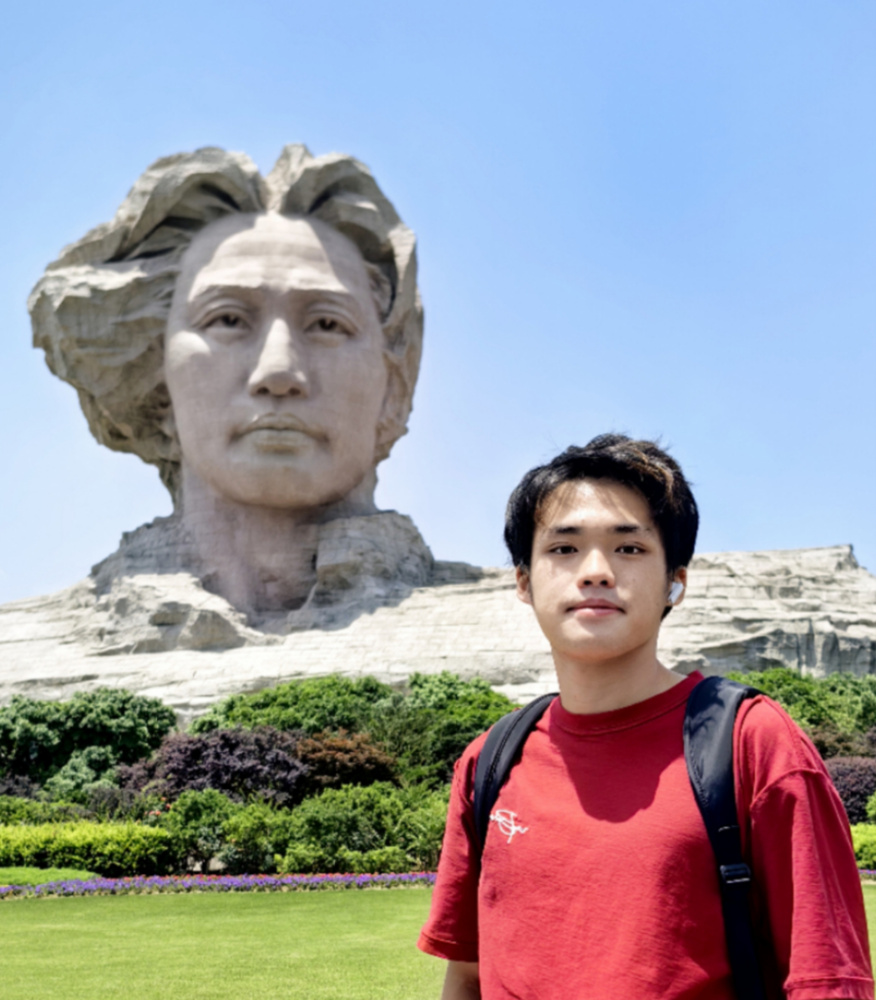

Hello! I'm Fangteng FU(or you can call me Magnus). I am now a Sophomore at HKUSTGZ who is intended to major in AI. I was once a summer researcher at CIS Lab ,CMA Lab, HKUSTGZ and currently a Program Assistant at HKUSTGZ Library. Scince I am not such a scholar now, this page is mainly used to demostrate my projects, my current works and my future thoughts. (Also for selling myself to the professors :）)
I was born and raised in Shenzhen, however, I would recogize myself as Haian people. I graduted from Shenzhen Experimental School (SZSY). I have always had a great love of science, and I am happy to go on a quest to understand how a matter works. I was fascinated by the rigor and precision of mathematical logic and formulas and theorems to make things work. I also love the arts, from poetry to street dance.
I aim to publish my own works in my junior year, consequencely, I decided to gain as much experience in labs as possible when I am a sophomore. I am always willing to learn and to progress. Currently, I am equipted with the basic coding skills including python, c++, js, html and css. I have also finish courses like Honor Calculus and Applied Sstatistic and I also self-learn about the Data Structure and Algoritm. The summer research program also equipted me with the basic understanding of research.
Now, I am really intereting in AI and Data Science Field. If you are looking for enthusism UG student, I will be a good choice. It will be my great honor to hhear from you.